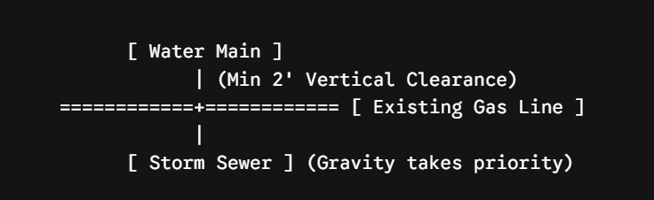

Utility Deign and Coordination
CEID provides comprehensive utility design and coordination services for infrastructure and transportation projects throughout Texas. Our team works closely with public agencies, utility owners, engineers, and contractors to identify, coordinate, and resolve utility conflicts during every phase of project development.
Our services include utility investigations, conflict analysis, relocation coordination, utility permitting support, plan development, and construction coordination. By integrating utility management into the design process, we help minimize project delays, reduce construction risks, and improve overall project efficiency.
With a commitment to quality, accuracy, and compliance with Texas standards, CEID delivers practical and cost-effective utility solutions that support successful project delivery.
Wet Utilities (Gravity and Pressure)
Storm Sewer: Gravity-driven. Typically takes priority on depth and alignment because slopes must be maintained to match your hydraulic calculations.
Sanitary Sewer: Gravity-driven. Requires precise slopes and deep excavations to clear other lines.
Water Main (Domestic & Fire): Pressurized system. Flexible in routing, but must maintain strict horizontal and vertical separation from sanitary lines to prevent contamination (typically 9 feet horizontal, 2 feet vertical clearance per standard state environmental rules like TCEQ).
Dry Utilities (Power, Gas, Telecom)
Electrical (Primary & Secondary): Handled in coordination with local providers (e.g., CenterPoint Energy in the Houston area). Requires transformer placement, duct banks, and clearances.
Gas: Pressurized line, usually shallow, requiring specific clearances from electrical structures.
Telecom / Fiber Option: Low-voltage lines, often installed via directional drilling, but notorious for conflict if routing isn’t strictly assigned.
Coordination Process (Subsurface Utility Engineering - SUE)
To prevent catastrophic field conflicts (e.g., a storm pipe driving right through a fiber optic backbone), engineers rely on Subsurface Utility Engineering (SUE) to map existing infrastructure.
Conflict Resolution & Crossings
When utilities cross, a strict hierarchy dictates who moves. Because gravity mains (Storm and Sanitary) cannot easily change slope without ruining capacity, pressurized or dry lines must bend around them using vertical offsets (lower or upper bends).
Utility Separation Matrix (Typical Example)
